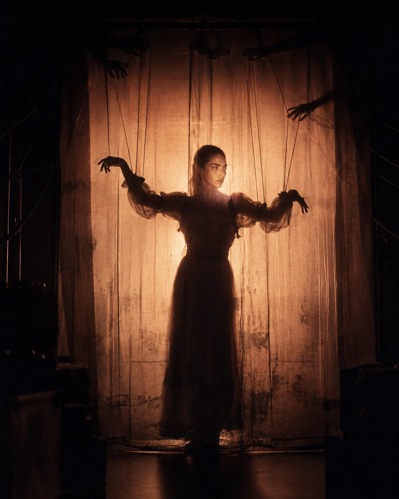

Quem puxa
os fios?
R. J. Wolf fala sobre diários escritos para ninguém, a criação de AMORFA, a fronteira entre vida privada e obra, inteligência artificial como infraestrutura de acesso e o estranho momento em que páginas guardadas durante anos começam a voltar como voz.

R. J. Wolf fala durante muito tempo sobre música. A biografia chega com mais resistência. Entre a pessoa privada, o nome que assina a obra e a figura de AMORFA existe proximidade suficiente para produzir confusão — e distância suficiente para que nenhuma dessas três coisas explique completamente as outras.
O arquivo
R. J. Wolf fala durante muito tempo sobre música. Sobre o baixo que tornou uma faixa sensual quando deveria causar desconforto. Sobre uma palavra que permaneceu por semanas e depois precisou desaparecer. Sobre o momento em que um coro pode estar impecável e ainda destruir uma canção.
A biografia chega com mais resistência.
Wolf assina as composições, a produção e a direção criativa de AMORFA. Isso é público. A pessoa por trás desse nome permanece menos disponível. Datas, nomes e uma cronologia afetiva que permita reconstruir as canções como documentos encontram portas fechadas com frequência.
A reserva não funciona como campanha de mistério. Relações, desejo, vergonha, obsessão, ausência e decisões pouco lisonjeiras atravessam as músicas. O limite aparece quando experiência autobiográfica começa a ser tratada como autorização para acesso irrestrito.
AMORFA ocupa um terceiro lugar: feminina, com rosto, voz e presença visual, mas sem uma biografia promocional fabricada. Entre a pessoa privada, R. J. Wolf e AMORFA existe proximidade suficiente para produzir confusão — e distância suficiente para que nenhuma dessas três coisas explique completamente as outras.
Sim. Existe material autobiográfico nas músicas. Isso nunca foi segredo para mim. Uma experiência virar obra não entrega automaticamente o resto da minha vida junto com ela.
Claro. A curiosidade existe. A fronteira também. Eu posso falar sobre o que aconteceu dentro de uma música durante horas. A vida inteira da pessoa que escreveu aquela música continua sendo outra coisa.
Que escrevia demais. Essa parte é segura. [risos]
Às vezes. Em outros momentos eu estava prolongando a coisa. Hoje consigo olhar para determinados textos e perceber que chamava de investigação o que já era obsessão.
Porque conheço o final. Isso deixa o retrospecto muito arrogante. Encontro páginas em que está escrito, com uma clareza impressionante, que determinada situação provavelmente não teria futuro. E continuei nela.
No papel. A vida estava alguns quilômetros atrás. [risos]
Já julguei bastante. Hoje tento lembrar que quem está vivendo recebe uma terça-feira, depois uma mensagem, uma noite muito boa, três dias estranhos, uma justificativa que faz algum sentido. O final transforma bagunça em narrativa. Na época era só bagunça.
Quando algumas reações minhas começaram a voltar em situações muito diferentes. Foi desagradável. É confortável colocar cada história numa pasta com o nome de alguém. Aí você percebe que algumas coisas chegaram em todas as pastas.
A maneira como eu reagia à incerteza. O espaço que uma pessoa podia ocupar justamente porque eu precisava interpretar o tempo todo. E a diferença entre querer alguém e querer ser escolhido por alguém. Essa última foi importante.
Sim. Houve situações em que ser escolhido carregava um valor enorme. Se justamente aquela pessoa me quisesse, aquilo parecia confirmar alguma coisa sobre mim. É uma função pesada para colocar em alguém.
Coisas que hoje eu faria diferente.
Sim.
Às vezes.
É.
A música começa cortando
Wolf deixa algumas respostas caírem sem explicação posterior. Talvez isso seja importante porque AMORFA pode ser um projeto obcecado por mecanismo; a matéria que o alimenta continua feita de comportamentos menos elegantes.
Corte. O diário aguenta tudo. Se eu precisava escrever quatro páginas, ele recebia quatro. A música é muito menos generosa. Uma experiência pode ter sido enorme e ainda produzir uma frase ruim.
Muito. No começo eu protegia certas frases porque tinham acontecido daquele jeito. A importância pessoal parecia dar algum direito artístico a elas. Não dá.
Ela muda de lugar. Você comprime tempo. Aproxima duas lembranças. Uma frase real pode desaparecer porque explica demais. A música reorganiza. Eu tento preservar a pressão que fez aquilo ser escrito.
A forma que apareceu
AMORFA surge dentro dessa reorganização. A figura é feminina. R. J. Wolf aparece nos créditos. As duas identidades convivem sem que uma funcione como biografia literal da outra.
Eu precisava de distância. Quando tudo ficava imediatamente preso ao meu rosto, algumas coisas pareciam diário musicado. AMORFA permitiu que a experiência ganhasse outra vida depois de entrar numa música.
Sim. A voz começou a funcionar daquela maneira. A imagem também. Em determinado momento aquilo já tinha uma presença diferente da minha.
Pensei nisso. Perdia alguma coisa. A distância fazia parte da força.
Existe, porque personagem convida esse tipo de construção. Eu prefiro resistir. AMORFA já tem matéria humana suficiente dentro das músicas. A identidade artística é o que me interessa.
Depende. Às vezes está muito perto de uma experiência minha. Em outras músicas, a personagem já foi longe o suficiente para fazer coisas que eu nunca fiz. Tem um espaço entre os dois que eu gosto de deixar aberto.
Eu queria uma identidade que suportasse mudança. Uma música podia ser eletrônica, outra ter guitarra, outra ser agressiva, outra delicada. O nome dava espaço.
Essa é a ironia. Hoje consigo ouvir alguma coisa e pensar imediatamente: isso não pertence aqui. A forma apareceu fazendo.
Talvez um pouco. Se AMORFA significar que qualquer coisa serve, a identidade desaparece. Mudança também pode ter lógica.

“Eu sabia desejar som”
A segunda metade da origem de AMORFA é material. Havia texto. Havia imaginação sonora. Havia também uma distância econômica enorme entre imaginar determinados arranjos e poder testá-los em condições tradicionais de estúdio.
Quando comecei a ter acesso a ferramentas que me permitiam experimentar. Foi aí que a possibilidade ficou concreta. Eu jamais imaginaria, enquanto escrevia aqueles diários e poemas, que um dia conseguiria ouvi-los com esse tipo de produção.
Eu sabia desejar som. Produzir é outra competência. Eu conseguia sentir que determinada música precisava de peso. Queria um coro aparecendo num ponto. Sabia quando o baixo deveria conduzir. Percebia quando uma voz estava bonita demais para a situação. Meu vocabulário para explicar essas coisas era muito menor.
Muito. “Quero escuro” é quase inútil. Você precisa descobrir o que está criando aquela sensação: a harmonia, o registro, a bateria, o espaço, a proximidade da voz, o peso do baixo. Fazer me ensinou a ouvir com muito mais precisão.
Sim. E eu gostaria de trabalhar assim em algumas situações. Só que existe dinheiro nessa frase.
Muito. Se eu precisasse pagar estúdio, vocalista, músicos, arranjos e horas de experimentação para cada ideia, grande parte desse catálogo continuaria sendo texto. Ferramentas generativas colocaram possibilidades muito maiores ao meu alcance. Eu posso pensar: quero corais aqui; quero uma massa de cordas processadas; quero testar outra arquitetura vocal; quero ouvir o baixo fazendo outra coisa. Antes, cada uma dessas perguntas tinha um custo muito concreto. Hoje eu consigo experimentar.
Você consegue fracassar mais barato. Isso é enorme. Uma ideia pode ser péssima e eu consigo descobrir. Antes, talvez eu nem tivesse dinheiro suficiente para chegar ao erro.
Muda. Às vezes a discussão parte de “entre num estúdio, contrate músicos, trabalhe com um produtor” como se essa estrutura estivesse igualmente disponível para todo mundo. Ela custa. Eu sabia que queria ouvir corais, determinadas massas de corda, guitarras específicas, várias camadas vocais. Durante muito tempo isso pertencia mais à imaginação do que às minhas possibilidades reais.
Essa tensão existe. Uma bateria realizada sinteticamente ocupa um lugar que poderia ter uma pessoa tocando. Uma voz sintética também. Eu não tenho interesse em apagar essa diferença para tornar a defesa do processo mais fácil.
Na escrita. Na composição. Na direção. Nas decisões que organizam a obra. A realização sonora tem outra natureza. Eu não reivindico tocar uma bateria que não toquei.
Existe curadoria. Só que ela descreve uma parte. Antes de escolher entre resultados já existe intenção, letra, forma, desenho de voz, comportamento instrumental, coisas que aquela música pode suportar e coisas que destroem o sentido dela. Depois também existe reconstrução. Às vezes recebo uma versão tecnicamente ótima e descarto.
Porque pode estar dizendo a coisa errada.
Emocionalmente. Uma voz linda pode destruir uma frase. Um coro pode inflar uma coisa que precisava permanecer pequena. Uma bateria pode criar uma sensação de vitória numa música em que ninguém venceu. Isso acontece bastante.
Já. E essas escolhas me interessam muito.
Exatamente. “Melhor” depende do que a música precisa fazer.

Por que tanta música?
Quando a barreira de entrada cai, aparece outro problema. Wolf tinha anos de texto acumulado e, de repente, uma maneira relativamente acessível de testar como aquilo poderia soar. AMORFA começa a produzir em volume. Muito volume.
Porque quando essa porta abriu, havia muita coisa represada. Eu achava que tinha algumas canções possíveis. Descobri um arquivo inteiro. Foi uma vazão.
Sim. Essa distinção ficou mais clara depois. No começo existia uma urgência enorme em tirar as coisas da gaveta. Você passa anos escrevendo sem imaginar que aquilo terá som e, de repente, começa a ouvir. Eu queria colocar para fora.
Seria mais seletivo.
Algumas decisões, sim.
De determinadas decisões. De começar, não.
Esse é um dos maiores problemas. A próxima versão está sempre ali. Então você precisa criar o próprio limite.
Estou aprendendo. Às vezes a décima versão realmente encontra alguma coisa. Às vezes a segunda já estava pronta e as outras oito são ansiedade com arquivo de áudio.
Na décima primeira. [risos]

Os primeiros discos
Os primeiros lançamentos de AMORFA registram uma identidade sendo descoberta enquanto já está sendo publicada.
Desaparecer Bonito encontra câmera, imagem, desejo, exposição, consumo, disponibilidade e intimidade atravessada por interface. Depois, Toque Fantasma, O Amor Que Achei Merecer e O Primeiro Erro deslocam essas obsessões para ausência, presença residual, corpo, projeção e para a pergunta mais incômoda: quanto desse mecanismo já existia antes de qualquer pessoa específica entrar na história?
O álbum me revelou bastante. Eu estava escrevendo situações. Escolher foto. Esperar reação. Conferir quem viu. Procurar alguém na tela e acabar procurando evidência de você mesmo. Quando as músicas começaram a ficar juntas, percebi a quantidade de comportamento que existia ali.
Luz Azul chega perto. Tem corpo, tecnologia, desejo, compulsão e uma estrutura pop acontecendo ao mesmo tempo. Ela consegue carregar essas coisas sem precisar explicar o projeto.
Porque ela é. Uma tela pode criar distância. Também pode permitir uma intimidade que talvez nunca existisse sem ela. Eu amo muita coisa que a tecnologia me deu. Também percebo o que ela faz com atenção, desejo e expectativa. As duas experiências estão juntas.
Sim. A câmera vai virando. Existe uma fase muito interessada no impacto de alguém. Depois aparece curiosidade por aquilo que já estava preparado para receber aquele impacto.
Pode. Eu preciso tomar cuidado. Autoconsciência também pode virar vaidade; também pode absolver todo mundo ao redor. Às vezes alguém simplesmente fez uma coisa ruim.
Claro. Eu espero que discordem. Eu mudo. Uma música registra uma posição, não uma constituição.
O que a tecnologia não resolve
A fronteira em que Wolf demonstra menos certeza é a voz. AMORFA tem identidade vocal, fraseado, arquitetura de camadas e escolhas interpretativas dirigidas com enorme detalhe. A emissão final é sintética.
Ainda não tenho uma palavra de que goste completamente. Existe intenção interpretativa na direção. Eu sei onde quero contenção, abertura, instabilidade, uma palavra longa, uma frase quase falada. A realização acontece sinteticamente. Essa pergunta ainda é mais interessante para mim aberta.
Não sei.
[pausa] Às vezes, sim.
Para mim, sim. Transparência acontece quando eu consigo explicar como a obra foi construída. Durante três minutos de música, eu quero que a música tenha a chance de existir antes do making of.
Virar demonstração de tecnologia. Se “foi feito com IA” for a coisa mais interessante que alguém consegue dizer depois de ouvir, alguma coisa ficou pequena demais.
A pessoa ouvir primeiro. A música fazer alguma coisa. Depois ela descobrir como foi construída e a conversa ficar ainda mais interessante.
Mais do que sabia. Ainda tem coisa escapando.
Ainda está aprendendo a parar. Essa parte continua ruim. [risos]
Quando quase tudo pode ser tentado, alguém ainda precisa decidir o que merece permanecer.
Há um padrão que permanece até o final da conversa. Wolf explica obsessivamente uma decisão musical e recua quando a explicação ameaça se transformar em prontuário pessoal.
AMORFA vive justamente dentro dessa fronteira: uma obra alimentada por experiências reais que preserva o direito de transformar essa experiência antes de entregá-la.
Talvez por isso a tecnologia ocupe um lugar menos estranho no projeto do que parece à primeira vista.
Os diários continham aquilo que Wolf conseguia escrever. As ferramentas permitiram descobrir como aquelas páginas poderiam soar. Junto com essa nova infraestrutura de acesso, veio um problema igualmente decisivo: quando quase tudo pode ser tentado, alguém ainda precisa decidir o que merece permanecer.
Para R. J. Wolf, essa continua sendo a pergunta central de AMORFA. E, por enquanto, talvez seja também a definição mais precisa do projeto.